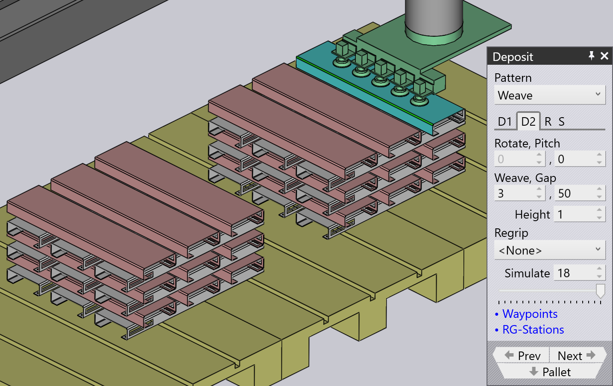

Ablagemustertypen
Simple Grid
Das Muster Simple Grid ist das am häufigsten verwendete und stapelt Teile einfach in einem rechteckigen Raster auf der Palette.
Bei Verwendung der Position Simple Grid ist standardmäßig nur eine Ablageposition D1 verfügbar.

Weave
Das Muster Weave ist bei langen und dünnen Teilen nützlich. Die Teile in den D2-Schichten werden im 90°-Winkel zu den Teilen in der D1-Schicht platziert, wie nebenstehend gezeigt.


-
Die Einstellung Verschränken steuert die Anzahl der Teile, die nebeneinander in jeder Schicht der Verschränkung gestapelt werden.
-
Der Abstand ist der Abstand zwischen diesen Teilen innerhalb der Verschränkung.
-
Die Raster-Einstellungen auf der Registerkarte Wiederholen können dann verwendet werden, um den gesamten Verschränkungsstapel mehrmals auf der Palette zu wiederholen. In diesem Beispiel wird der Verschränkungsstapel zweimal wiederholt (2 Spalten, 1 Zeile).
-
Die Einstellung Gap (Z,X) auf der Registerkarte Wiederholen wird verwendet, wenn die Verschränkung wiederholt wird, und gibt den Abstand zwischen den Verschränkungsschichten an.
Alternating
Das Muster Alternating ist am flexibelsten. In diesem Muster können Sie die Ausrichtung, Drehung und relative Verschiebung jeder alternierenden Schicht steuern.
Das alternierende Muster bietet eine stabilere und auch kompaktere Stapelun g der Teile.
Bei Verwendung des alternierenden Musters sind die Ablagepositionen D1 und D2 sowie Regrip R1 standardmäßig verfügbar.
| Passen Sie die Delta shift-Werte in D1, D2 an und fügen Sie Regrip hinzu, um die Teile miteinander zu verriegeln. |

Alternating Batch
Das Muster Alternating Batch ähnelt dem alternierenden Muster, bietet jedoch die Möglichkeit, Komponenten in Batches zu stapeln und Schichten zu alternieren.
Batch shift wird verwendet, um Teile innerhalb eines Batches zu und von den Z- und X-Achsen zu bewegen.
Batch count wird verwendet, um die Anzahl der Komponenten pro Batch pro Ablage D1 zu definieren, die von 1 bis 50 reichen kann. Im folgenden Beispiel ist sie auf 5 eingestellt.
Delta shift wird verwendet, um eine gesamte Ablage D1 bestehend aus Batches zu und von den Z- und X-Achsen zu bewegen.


Verwenden Sie die Option layers auf der Registerkarte Wiederholungsraster (R), um die Anzahl der Batches pro Ablage zu definieren. Im folgenden Beispiel ist sie auf 2 eingestellt.

Drop to Basket
Dieses Muster wird verwendet, um kleine Teile mit dem mechanischen Greifer in einen Sammelkorb zu legen.

Conveyor
Das Muster Conveyor wird verwendet, um Teile auf einem Teileförderband abzulegen. Diese Option ist wichtig, wenn lange dünne Teile auf dem Förderband abgelegt werden.
| Wenn ein mechanischer Backengreifer für mittelgroße Teile verwendet wird, werden alle anderen Mustertypen für die Auswahl deaktiviert, mit Ausnahme des Förderbandmusters. |

Inclined
Das Muster Inclined wird verwendet, um Teile vertikal gegen eine Wand (oder eine Palette mit einer Seitenwand) zu stapeln.
| Dieses Muster ist nicht immer verfügbar. Das Teil muss groß genug sein, damit dies möglich ist. Bei kleinen Teilen kann der Roboter nicht tief genug nach unten reichen, um das Teil gegen die Wand zu stapeln. |

Inclined pair
Dieser Mustertyp ist dem Muster Alternating sehr ähnlich, außer dass die Teile vertikal als Paar abgelegt werden.
Ein zusätzliches Umgreifen wird entweder bei der Ablage D1 oder D2 eingeführt, um ein Paar zu bilden.
Auto-pitch bestimmt den Neigungswinkel des Stapels automatisch.
Die Einstellung Pitch wird verwendet, um den Neigungswinkel der Stapelung anzupassen, und die Werte für Delta shift werden verwendet, um das Teil in den X- und R-Achsen zu bewegen, um einen kompakteren Stapel zu erzielen.


Manual
Das Muster Manual wird verwendet, um jede Schicht von Teilen in einer etwas anderen Ausrichtung zu platzieren.

-
Verwenden Sie die Schaltfläche Hinzufügen, um ein neues Teil oben auf die oberste Schicht hinzuzufügen.
-
Verwenden Sie die Navigationsschaltflächen neben der Registerkarte Dn, um zur vorherigen oder nächsten Schicht zu gelangen.
-
Die Einstellungen Delta shift, Drehen und Pitch können verwendet werden, um das Teil anzupassen, damit es besser auf dem darunter liegenden Teil sitzt. Sie können auch die Delta shift verwenden und auf Auto-pitch klicken, um TecZone Bend zu bitten, einen optimalen Neigungswinkel zu berechnen.
-
Verwenden Sie die Schaltfläche Remove, um das oberste Teil zu entfernen.
-
Nachdem ein manueller Stapel erstellt wurde, können Sie die Einstellungen auf der Registerkarte Wiederholen (R) verwenden, um denselben Stapel über die Palette zu wiederholen. Das obige Bild zeigt denselben Stapel, der für 2 Spalten, 1 Zeile mit einem Abstand von 250 mm zwischen den Spalten wiederholt wird.
-
Die Einstellungen auf der Registerkarte Sequenz (S) können verwendet werden, um zu steuern, ob die Teile by layer oder by pile gestapelt werden. Wenn Sie die Stapelung Stapel für Stapel verwenden, werden alle Teile auf dem ersten Stapel fertiggestellt, bevor wir mit dem zweiten Stapel beginnen.